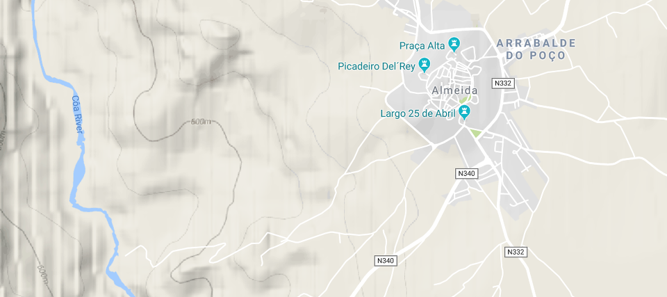
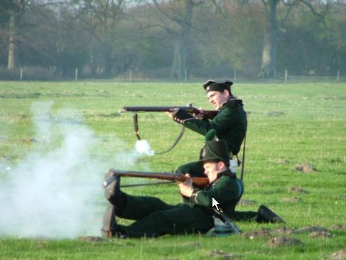
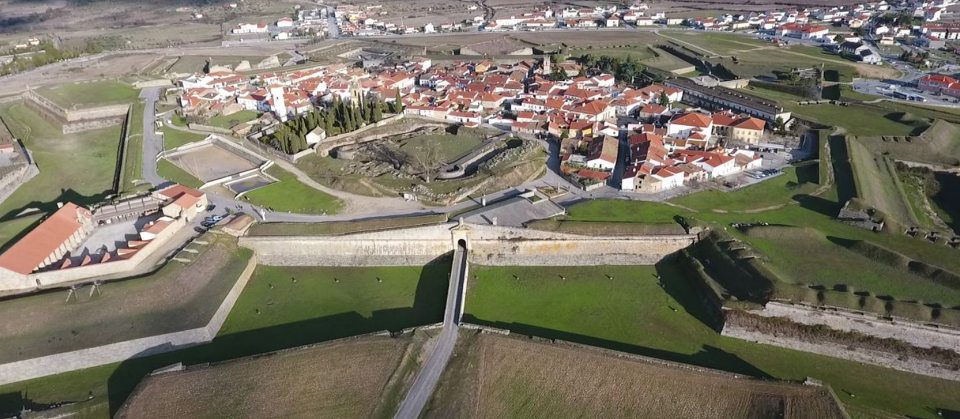
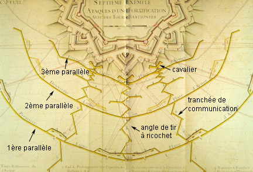
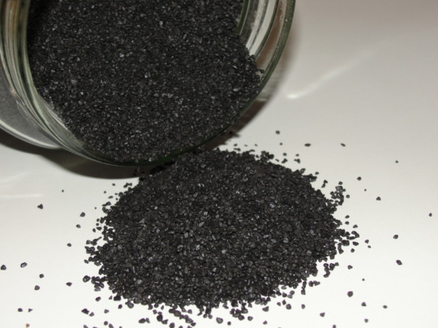
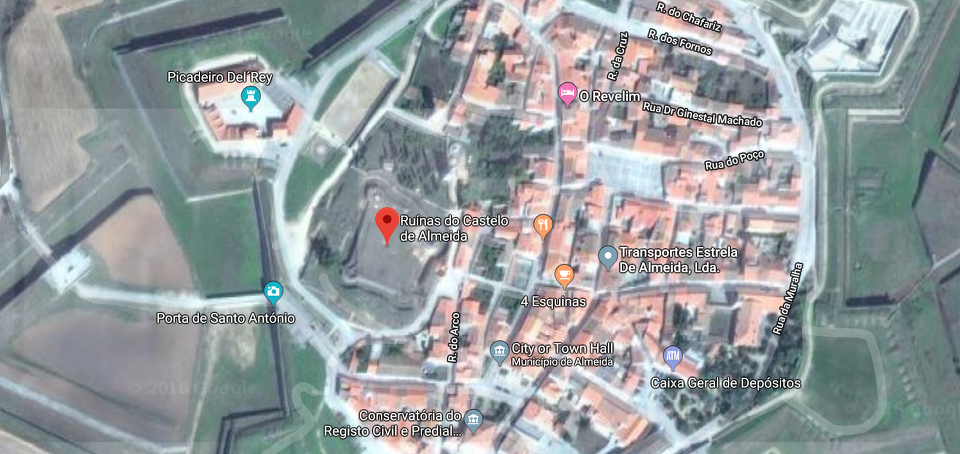
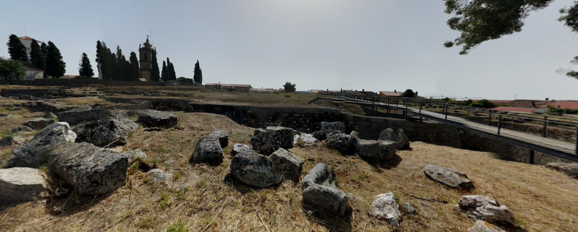
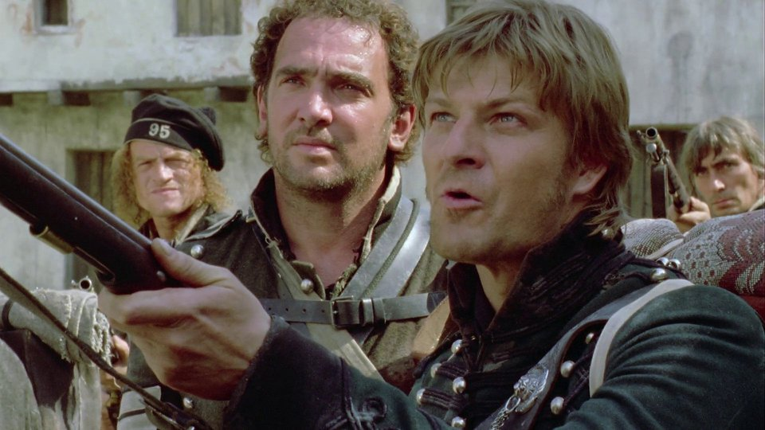

두 요새 (2) - 알메이다(Almeida)의 함락
게시: 2018-10-29T06:30:00+09:00
7월 10일 시우다드 로드리고에서 항복을 받아낸 프랑스군은 포위전을 위해 설치했던 공성포를 참호에서 파내고 벌여놓았던 탄약들을 정리하는 등 이동 준비를 한 뒤, 하루 정도의 행군 거리인 알메이다로 향했습니다. 이들이 포르투갈 국경을 넘어 알메이다 인근에 나타난 것은 7월 20일이 넘어서였습니다.
그러나 이들과 한판 대결을 벌여야 하나 망설이고 있던 크로퍼드 장군에게는 7월 22일 웰링턴으로부터 "코아(Coa) 강 동쪽에서는 교전하지 말라"는 편지가 날아듭니다. 알메이다 요새는 코아 강 동쪽에 위치해 있었습니다. 강대한 프랑스군과 야전에서 승부를 벌이는 것은 불리하다고 판단한 웰링턴은 그쪽으로 증원군을 보낼 생각이 없었고, 크로퍼드 장군에게 사실상 알메이다는 저 혼자 살아남도록 내버려두라는 명령을 내린 셈입니다.

(알메이다는 사실 스페인의 침공에 대비하기 위한 요새치고는 위치가 좋지 않았습니다. 수심이 깊은 코아 강이 동쪽이 아닌 서쪽에서 흐르고 있어서, 포르투갈 방향에서 지원군이 오기 힘들게 되어 있습니다.)
시우다드 로드리고의 스페인군에 이어 알메이다에 있는 영국군과 포르투갈군까지 연이어 배신하게 된 셈인 크로퍼드 장군은 나름대로 고민이 깊었나 봅니다. 그는 웰링턴의 편지를 받고서도 즉각 코아 강 서쪽으로 후퇴하지 않고 알메이다 인근에서 머뭇거렸습니다. 그러다 2일 후인 7월 24일 이른 아침, 갑작스럽게 나타난 2만의 프랑스군과 맞닥뜨리게 되었습니다. 1개 사단 5천의 병력으로는 도저히 상대가 안되는 게임이었으므로 본격적인 전투가 벌어지기 전에 후퇴하는 것이 맞았겠으나, 희한하게도 이 날 냉정하기로 소문난 크로퍼드 장군은 연달아 실수를 저지릅니다. 네 원수가 프랑스군 전체가 아니라 2개 사단을 보내 자신을 상대하는 것을 보고는 저 정도면 충분히 한방 먹여줄 수도 있겠다고 생각했는지, 후퇴하지 않고 프랑스군과 맞짱을 뜨기로 한 것입니다.
이건 명백하게 무모한 결정이었습니다. 그 일대의 코아 강은 꽤 깊어 사람과 말이 그냥 건너기에 힘든 곳이었는데, 하필 전날 밤 거세게 비가 내리는 바람에 물이 불어 도저히 걸어서는 건널 수 없는 상태가 되어 있었습니다. 따라서 퇴로는 좁은 다리 하나 밖에 없는데, 그런 강을 등 뒤에 두고 자신의 2배가 넘는 프랑스군을 상대하게 된 셈이었으니까요. 일이 안되려면 별의별 일이 다 생긴다더니, 인근의 알메이다 요새에서는 크로퍼드 장군 휘하의 제95 라이플 연대에게 맹포격을 가해댔습니다. 라이플 연대의 군복은 전통적인 영국군의 붉은색 자켓이 아니라 암록색의 자켓이었거든요. 알메이다 요새의 영국군과 포르투갈군은 이들을 프랑스군으로 착각했던 것입니다. 난데없이 아군의 포격을 받은데다 훨씬 더 많은 병력의 프랑스군 유격병(voltigeur)들이 달려들자, 영국군의 전초선을 맡고 있던 정예병인 라이플 연대도 맥없이 무너져 버렸습니다.

(제95 라이플 연대 병사들입니다. 사격 자세가 좀 이상한 것은 이들이 전열 보병이 아니라, 총강에 강선을 새긴 라이플 소총으로 무장한 유격병이기 때문입니다. 라이플 소총은 활강 총신(smoothbore)을 가진 머스켓 소총에 비해 유효 사거리가 더 길었으므로, 유격병들에게 매우 좋은 무기였습니다. 그럼에도 불구하고 프랑스군의 유격병(voltigeur) 부대는 라이플 소총을 끝까지 채택하지 않았는데, 이는 라이플 소총은 탄환을 장전할 때 강선에 탄환이 꽉 맞게 하기 위해 얇은 가죽 조각으로 탄환을 감싸서 밀어넣어야 하느라 재장전 시간이 너무 길었기 때문이었습니다. 아무튼 영국군의 라이플 연대 병사들은 chosen men이라고 하여 정예병으로서의 자부심이 꽤 있었다고 합니다.)
일이 이렇게 되자 크로퍼드도 뒤늦게나마 제 정신이 들었나 봅니다. 그는 황급히 일부 대대들에게 후위 엄호를 하게 하면서 다른 대대들에게는 다리를 건너 후퇴하라고 명령을 내렸는데, 역시 그 날 크로퍼드는 악재가 낀 날이었나 봅니다. 이번에는 가뜩이나 병목을 일으키던 코아 강 위의 좁은 다리 위에서 보급마차가 엎어지는 바람에 후퇴 길이 꽉 막혀 버린 것입니다. 뒤쪽의 프랑스군은 추격에 열을 올리며 후위 부대들을 밀어붙이고 있었습니다. 존 무어 경과 함께 했던 코루냐 철수 작전에서도 살아남았던 역전의 크로퍼드 장군의 운명도 여기까지인가보다 싶었습니다.
그러나 확실히 크로퍼드는 웰링턴이 신뢰할 만한 지휘관이었습니다. 혼비백산할 상황에서도 그는 침착하게 후퇴하느라 막힌 다리 앞에서 줄을 선 부대들에게 '뒤로 돌아'를 외친 뒤 다리와 프랑스군 사이에 있는 나지막한 능선에 방어선을 쳤습니다. 이번에는 진짜 배수의 진을 친 셈이었습니다. 생즉사 사즉생이라더니, 어차피 퇴로가 없어진 셈이 된 영국군은 용감히 돌격하여 추격하던 프랑스군을 대혼란에 빠드렸습니다. 이 덕분에 영국군은 시간을 벌었고, 크로퍼드의 경보병 사단은 무사히 마차를 치우고 다리를 건너 후퇴할 수 있었습니다. 뒤늦게 재추격에 나선 프랑스군도 제대로 된 판단을 내리지 못한 것은 마찬가지였습니다. 영국군이 후퇴한 그 다리로 무리하게 추격을 하려다 강 건너편에 잔뜩 대기하고 있던 영국군의 맹반격에 많은 사상자를 내고 결국 추격을 단념해야 했지요. 결과적으로 이 코아 강 전투에서 양군의 사상자는 비슷한 규모였습니다.
하지만 전체적으로는 모든 것이 프랑스군의 계획대로 돌아가고 있었습니다. 이렇게 크로포드 장군의 경보병 사단을 코아 강 서쪽으로 밀어내어 방해꾼을 제거한 프랑스군은 당장 다음날부터 알메이다 포위에 돌입한 것입니다. 7월 24일 아침에 갑자기 나타나 크로퍼드를 놀라게 했던 프랑스군은 확실히 급히 움직이느라 공성포를 가지고 있지 않았으므로 본격적인 공격은 거의 3주 뒤인 8월 15일 공성 장비(siege train)가 도착한 뒤에나 시작되었습니다. 다시 지그재그 교통로를 파기 시작한 프랑스군은 8월 24일까지 11개의 엄폐 포대를 구축하고 50문의 대포를 설치할 수 있었습니다. 물론 알메이다 요새의 수비군도 작업 중인 프랑스군에게 치열하게 포격을 가했습니다. 그러나 경험 많은 프랑스군 공병대의 철저한 작업 덕분에 프랑스군의 피해는 거의 없었습니다.

(역시 별 모양의 근대적 해자와 방벽을 갖춘 알메이다 요새입니다. 요새 내에 뭔가 빈 공간이 있는 곳은 아주 슬픈 사연이 있는 곳입니다.)

(대포가 발달하면서 요새도 그에 따라 변형되어 발전했고, 그런 별 모양의 근대적 요새를 공략하기 위해 공성전 양상도 바뀌었습니다. 지그재그 교통 참호와 여러 겹에 거친 평행 참호의 도면입니다.)
웰링턴이 영국군과 포르투갈군이 협력하여 지키던 알메이다 요새를 아무 지원군도 없이 내버려 둔 것은 매정한 일이긴 했지만 무책임하고 비상식적인 일만은 아니었습니다. 알메이다의 수비군은 5천에 불과했지만 어차피 좁은 요새 안에 더 많은 병력이 있어봐야 도움될 것도 없었습니다. 그리고 시우다드 로드리고가 10주간 포위 공격에 버티는 동안 물자를 비축하고 방비를 튼튼히 할 시간이 충분했으므로 프랑스군의 포위 공격에 상당히 오랜 시간 버틸 수 있었습니다. 전장에서는 어떤 상황 변화가 일어날지 아무도 알 수 없는 일이었고, 굳게 버티다보면 끝까지 요새를 지킬 수도 있었습니다. 미숙하기 짝이 없다는 스페인군도 무려 10주를 버티었으니, 윌리엄 콕스(Willian Cox) 장군의 영국-포르투갈 혼성군이 지키는 알메이다는 15주 혹은 20주를 버틸 수도 있었습니다. 말이 쉬워서 20주지 달로 따지만 그건 5달이었고, 해를 넘겨 한겨울이 되는 상황이었습니다. 야전군이 한 장소에서 여름부터 겨울까지 포위를 유지하는 것은 쉽지 않았습니다. 따라서 알메이다가 꼭 함락될 운명이라고 단정지을 수는 없었습니다.
하지만 그건 100km 후방의 안전한 사령부 책상 위에서나 통하는 이야기였습니다. 당장 8월 26일 아침 6시부터 프랑스군의 포격이 시작되자 알메이다 요새는 곳곳에 화재가 발생하기 시작했습니다. 영국군은 스페인군을 미숙하고 군기도 없다고 비웃는 편이었지만, 뭐 영국군도 포위전에 그렇게 능숙한 편은 아니었습니다. 오히려 별다른 훈련도 받지 못했던 사라고사(Zaragoza) 민병대는 1차 사라고사 포위전을 거치며 농성전의 대가가 되어 있던 편이었지요. 가령 사라고사 수비대는 화약을 저장하는 방법도 남달랐습니다. 당시 화약으로 사용되던 흑색 화약은 초석과 유황, 숯을 적절한 비율로 섞어 만드는 것이었는데, 사라고사 수비대는 혹시라도 적의 폭발탄이 화약고에 명중하여 화약고에 유폭을 일으킬까 염려하여 화약을 미리 섞어놓지 않고 초석 따로 유황 따로 숯 따로 보관했다가 매일 조금씩 배합하였습니다. 덕분에 별 모양의 근대식 요새가 아니라 중세 시대의 취약한 성벽으로 보호된 사라고사는 프랑스의 명장 장란의 공격 하에서도 무려 2달을 버틴 바 있었습니다. 놀랍게도 사라고사 수비군은 성벽이 무너진 다음에도 시가전을 벌이면서 1달 가까이를 더 버텼지요. 그러나 알메이다의 영국군은 그런 농성전 경험이 없었습니다. 그런 세심함의 작은 차이가 큰 결과를 만들어 냅니다.

(초석과 유황과 숯의 적절한 배합률에 대해서는 빅토르 위고의 '레미제라블'에 온스 단위로 소수점 한자리까지 정확하게 나옵니다. 심지어 적절하게 배합된 화약가루가 적절히 뭉쳐지기 위해서는 물 몇 온스를 섞어야 한다는 팁도 친절하게 알려줍니다.)
8월 26일 하루 종일 영국군과 포르투갈군은 프랑스 공성포대에 포격으로 반격하느라 정신이 없었습니다. 당연히 많은 화약통이 요새 중앙에 있는 중세 시대 건물에 위치한 탄약고에서 쉴새 없이 반출되어야 했습니다. 정확한 정황이야 알 길이 없지만 짐작되어지는 바에 따르면, 그렇게 굴려나오던 많은 화약통 중 하나가 다소 불량이었던 모양입니다. 화약통 하나가 반출되어 나오는 과정에서 화약을 질질 흘렸고, 그렇게 해서 탄약고로부터 요새 광장으로 길게 화약가루 지국이 마치 도화선처럼 이어지게 되었습니다. 그리고 저녁 7시 경, 불붙인 도화선을 달고 높은 포물선을 그리며 요새 안으로 날아들던 프랑스군의 폭발탄(bomb) 하나가 하필 그 화약가루 자국 위에 떨어졌습니다. 대참사가 벌어지려면 적어도 10가지 이상의 사고가 겹친다더니, 하필 그때 화약고 문이 열려 있었던 모양입니다. 긴 화약가루 자국에 붙은 불은 순식간에 그대로 화약고를 향해 맹렬히 타들어갔고, 그 결과는 대폭발이었습니다.

(별 모양의 알메이다 요새 내의 붉은 구글 위치 표지가 바로 문제의 화약고가 있던 알메이다 내성(Castelo de Almeida)의 잔해 자리입니다. 아직도 저렇게 텅빈 공간으로 비워놓았습니다.)

(구글 스트리트 뷰로 본 알메이다 화약고 폭발 장소입니다. 돌조각들만 남아있네요.)
당시 그 화약고 안에는 68톤의 흑색 화약과 1백만 발의 머스켓 탄약포가 저장되어 있었습니다. 흑색 화약은 현대적 폭약에 비해 폭발력이 강한 편은 아니라서 kg당 약 3 메가쥴(megajoule) 정도의 위력을 가집니다. 참고로 산소와 결합된 가솔린이 kg당 약 10 메가쥴의 위력을 내지요. 하지만 머스켓 소총용 탄약포를 빼고도 68톤입니다 ! 이 폭발은 엄청난 위력으로 알메이다 일대를 뒤흔들었습니다. 탄약고가 있던 건물은 물론 그 일대의 건물은 가루가 되어 날아갔고, 그 자리에는 오늘날에도 흔적이 남아있는 구덩이가 생겼습니다. 나폴레옹 전쟁 사상 가장 큰 폭발로 기록된 이 폭발로 인해 전체 5천의 수비병력 중 6백이 즉사했고 3백이 부상을 입었지요. 이 모든 것이 프랑스군이 포격을 시작한 첫날 발생한 일이었습니다.
콕스 장군은 다행히 이 폭발로 부상을 입지는 않았습니다만, 한순간에 전병력의 20%를 상실했습니다. 그리고 그보다 더 큰 문제는 이제 알메이다 요새 내의 탄약이 한순간에 다 날아갔다는 점이었습니다. 당장 프랑스군에게 대포는 커녕 소총조차 쏠 수가 없게 된 것이었지요. 이 대폭발은 프랑스군에게도 큰 충격과 기쁨을 주었습니다. 일단 그 날의 포격전은 그 폭발을 기점으로 딱 멈추었습니다. 요새 내의 사정을 짐작할 수 있었던 프랑스군은 다음날 콕스에게 조건부 항복을 권했고, 별다른 방법이 없었던 콕스는 그에 응해야 했습니다. 알메이다 요새는 이렇게 프랑스군과 영국군, 포르투갈군의 예상을 모두 깨고 불과 1달 만에 함락되었습니다.

(영국 작가 Bernard Cornwell의 시리즈 소설 중 Sharpe's Gold가 바로 이 알메이다 요새 공방전을 다루고 있습니다. 이 소설에서는 알메이다 요새의 폭발 사건을 매우 뜻 밖의 방향으로 전개시켰습니다. 그러나 스포일러가 너무 심하므로 여기서는 패스... BBC에서 드라마로 만든 Sharpe's Gold 편은 알메이다 함락과는 전혀 상관없는 스토리로 만들어졌습니다.)
이제 리스본으로 향하는 마세나의 포르투갈 원정군을 막아설 것은 웰링턴의 야전군 밖에 없었습니다. 웰링턴은 과연 마세나의 공격에 어떻게 대응했을까요 ?
Source : The Life of Napoleon Bonaparte by William M. Sloane
https://en.wikipedia.org/wiki/Combat_of_the_C%C3%B4a
https://en.wikipedia.org/wiki/Siege_of_Almeida_(1810)
https://en.wikipedia.org/wiki/Largest_artificial_non-nuclear_explosions
https://en.wikipedia.org/wiki/Robert_Craufurd